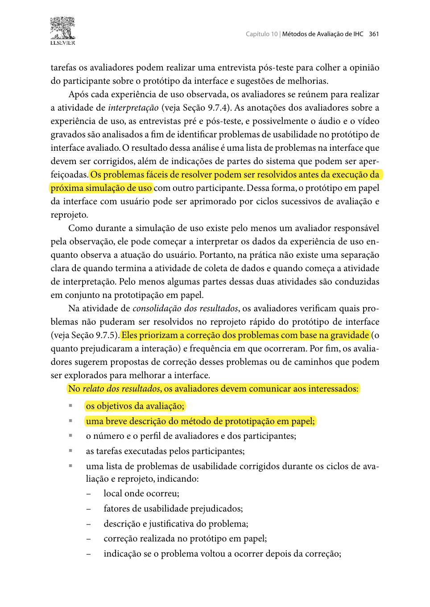
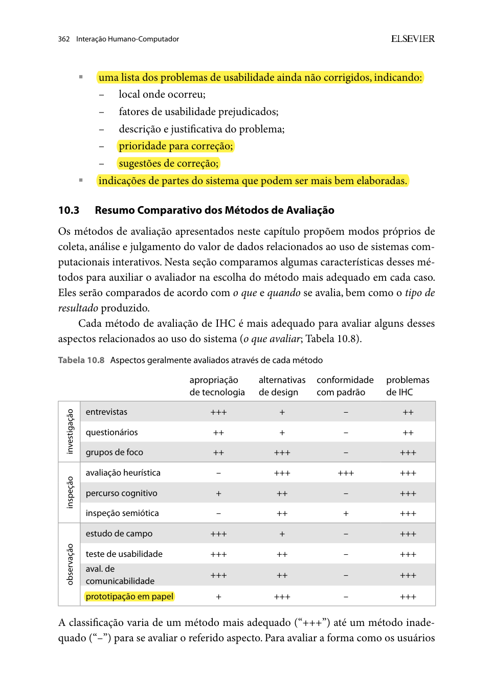
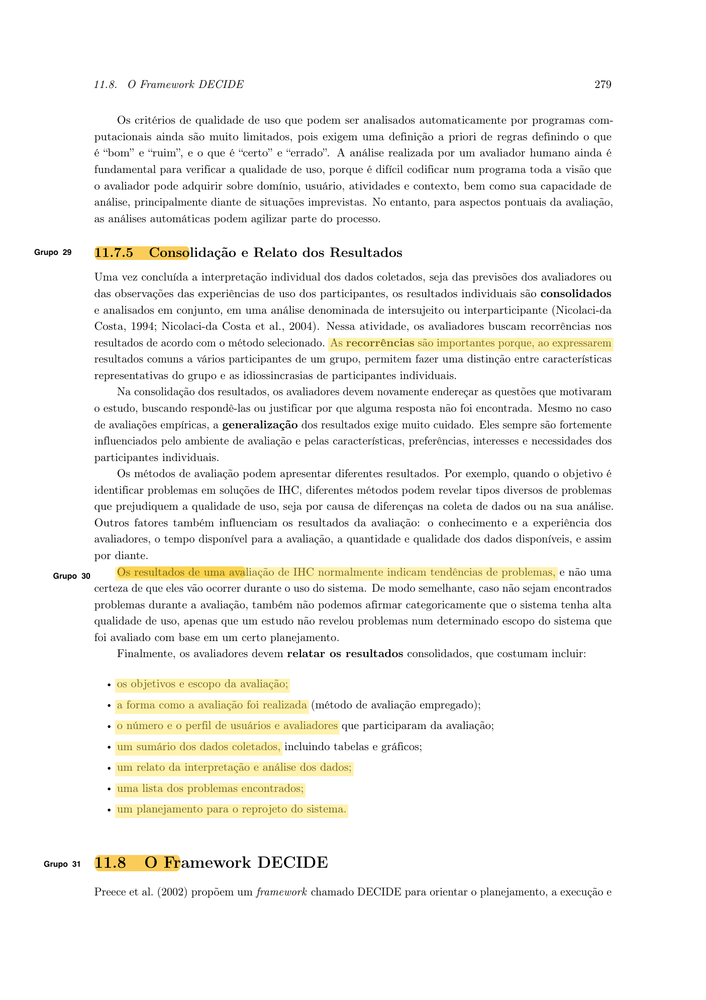

Histórico de Versão¶
| Data | Versão | Descrição | Autor(es) | Revisor(es) | Declaração de uso de IA |
|---|---|---|---|---|---|
| 25/10/2026 | 1.0 |
Criação do planejamento do relato dos resultados da avaliação do Protótipo de Papel (TAR-03) com modelos de tabelas e referências do livro-texto. | Lucas Araújo Lima | Arthur Mariani | Google Gemini — utilizado apenas para apoio na formatação sintática de tabelas em Markdown |
Planejamento do Relato dos Resultados da Avaliação do Protótipo de Papel (TAR-03)¶
Neste documento, apresenta-se o Planejamento do Relato dos Resultados da Avaliação do Protótipo de Papel referente à TAR-03 — Planejamento de Rota Completa (Porta a Porta) por Destino com Indicação de Paradas e Previsão de Chegada. Trata-se de um documento metodológico individual elaborado por Lucas Araújo Lima para padronizar como os dados coletados na sessão presencial de prototipação em papel (Etapa 6) serão analisados, consolidados e comunicados à equipe e aos interessados.
A estrutura deste planejamento fundamenta-se diretamente nas diretrizes de Consolidação e Relato dos Resultados (Barbosa & Silva, 2010, Cap. 9, Seção 9.7.5, p. 311–312; Barbosa et al., 2021, Seção 11.7.5) e nas exigências específicas de relato do método de Prototipação em Papel (Barbosa & Silva, 2010, Cap. 10, Seção 10.2.3, p. 361–362; Barbosa et al., 2021, Seção 12.2.3, p. 305–306).
1. Objetivos do Relato dos Resultados¶
O relato dos resultados da avaliação do protótipo em papel tem como objetivo central transformar as observações empíricas da sessão presencial (toques nas telas de papel, verbalizações do protocolo Think Aloud e ajustes em post-its) em insumos rastreáveis de engenharia de usabilidade para o projeto da SEMOB-DF / DF no Ponto. Seus objetivos específicos são:
- Avaliar o cumprimento das metas de eficácia e fluidez na TAR-03: Registrar se o participante representante da persona Marcos Paulo Vieira conseguiu planejar sua rota porta a porta (Samambaia Sul → SIA Trecho 3), identificar a parada de embarque ideal e reagir a imprevistos no trânsito interagindo exclusivamente com as peças de papel.
- Distinguir problemas corrigidos no ciclo rápido em papel de problemas pendentes: Cumprir a exigência metodológica de Barbosa & Silva (2010, p. 361–362), documentando separadamente as falhas simples resolvidas durante a própria simulação no papel (ex.: reescrita de um rótulo em post-it) e os problemas estruturais que exigirão reprojeto na etapa de alta fidelidade.
- Priorizar falhas por severidade e fatores de usabilidade prejudicados: Classificar cada obstáculo observado segundo a escala de severidade de Nielsen (1994) e mapear os fatores de qualidade de uso afetados (aprendizado, eficiência, memorização, segurança/prevenção de erros e satisfação).
- Fornecer especificações concretas para o Protótipo Digital de Alta Fidelidade: Traduzir os achados empíricos em diretrizes visuais e interativas para o desenvolvimento executável do sistema nas etapas subsequentes.
2. Estrutura Padronizada do Relatório Final de Resultados¶
Em estrita conformidade com a lista de itens obrigatórios estabelecida por Barbosa & Silva (2010, p. 312 e p. 361–362), o documento final de relato dos resultados da prototipação em papel da TAR-03 será composto pelas 8 seções padronizadas descritas a seguir:
- Objetivos e Escopo da Avaliação: Contextualização da TAR-03 avaliada em papel e retomada das perguntas investigativas (
QP01aQP06) definidas no Planejamento da Avaliação do Protótipo de Papel. - Descrição do Método e Protocolo Executado: Síntese da aplicação da Prototipação em Papel combinada ao protocolo Think Aloud, apresentando fotos reais das telas estáticas (Telas 01 a 03) e dos widgets móveis (post-its W01 a W04) confeccionados, além do link da gravação da sessão.
- Número e Perfil dos Avaliadores e do Participante: Caracterização demográfica e comportamental do usuário participante (anonimizado conforme o TCLE) e identificação explícita dos papéis desempenhados pelos avaliadores (Avaliador "Computador" e Avaliador Observador).
- Sumário das Tarefas Executadas e Dados Coletados: Consolidação do desempenho do participante nas sub-tarefas
TAR-03.1,TAR-03.2eTAR-03.3(sucesso com ou sem auxílio, tempo de execução, hesitações e citações diretas da transcrição). - Lista de Problemas de Usabilidade Corrigidos Durante o Ciclo no Papel: Relação detalhada dos problemas simples reparados imediatamente no próprio material em papel (indicando local, fatores de usabilidade prejudicados, descrição/justificativa, correção aplicada no papel e se o problema voltou a ocorrer após o ajuste).
- Lista de Problemas de Usabilidade Ainda Não Corrigidos (Pendentes): Relação dos problemas que não puderam ser solucionados no reprojeto rápido em papel (indicando local, fatores de usabilidade prejudicados, descrição/justificativa, prioridade/severidade de correção e sugestões de reprojeto).
- Indicações de Partes do Sistema que Podem Ser Mais Bem Elaboradas: Recomendações de aprimoramento visual, arquitetura da informação e feedback dinâmico para a transição rumo ao protótipo de alta fidelidade (Figma / executável).
- Análise de Limitações e Conclusão do Estudo: Reflexão sobre a validade ecológica da simulação em papel e fechamento do ciclo formativo.
3. Metodologia de Análise e Escala de Severidade dos Problemas¶
Conforme ressaltam Barbosa & Silva (2010, p. 361), na prototipação em papel a interpretação inicia-se simultaneamente à coleta de dados, à medida que o observador registra as reações do usuário diante da manipulação das peças pelo "avaliador computador". Após a sessão, a gravação em vídeo da mesa e as anotações de campo são revisadas para priorizar os problemas segundo sua gravidade (o quanto prejudicaram a interação) e frequência.
Para padronizar a priorização entre todos os integrantes do Grupo 05, será adotada a Escala de Severidade de Problemas de Usabilidade de Nielsen (1994), integrada aos fatores de usabilidade de Barbosa & Silva (2010):
Tabela 1 — Escala de Severidade para Priorização de Problemas no Protótipo de Papel
| Nível | Classificação de Severidade | Critério de Julgamento na Simulação em Papel (TAR-03) |
|---|---|---|
| 0 | Sem Importância | Comentário estético ou preferência subjetiva pontual que não afeta a compreensão nem o toque nos elementos de papel. |
| 1 | Problema Cosmético / Leve | Causa leve estranhamento visual (ex.: ícone de caminhada pouco detalhado no desenho à mão), mas o usuário toca no local correto sem atraso. |
| 2 | Problema Simples / Moderado | Provoca hesitação perceptível ou toque inicial em elemento incorreto do papel (ex.: dúvida entre o card da linha normal e semiexpressa), sendo superado pelo próprio usuário. Geralmente passível de correção imediata no papel. |
| 3 | Problema Grave | Compromete seriamente a execução da tarefa (ex.: o usuário não percebe o post-it de alerta de retenção ou não entende para qual parada deve caminhar), exigindo esforço elevado ou dica indireta para prosseguir. |
| 4 | Problema Catastrófico | Bloqueia integralmente a conclusão da tarefa no protótipo em papel, levando o usuário ao erro irreversível (ex.: perder o ônibus simulado) ou à desistência. |
Fonte: Adaptado de Nielsen (1994) e Barbosa & Silva (2010, p. 361).
4. Modelos de Tabelas para Consolidação e Relato dos Resultados¶
A seguir, definem-se os quatro modelos de tabelas que serão preenchidos no relatório final da avaliação do protótipo em papel da TAR-03, cobrindo integralmente os requisitos das páginas 361 e 362 do livro-texto.
4.1 Modelo de Tabela 1: Sumário de Execução das Tarefas no Papel¶
Tabela 2 — Modelo de Sumário de Desempenho nas Tarefas Executadas no Protótipo em Papel
| ID Tarefa | Tarefa Solicitada ao Participante (Escopo TAR-03) | Telas / Widgets Manipulados | Concluiu sem Ajuda? | Tempo Gasto | Erros / Hesitações Observadas | Síntese da Verbalização (Think Aloud) |
|---|---|---|---|---|---|---|
| TAR-03.1 | Informar o destino "SIA Trecho 3" na Home aproveitando a origem automática do GPS. | Tela 01 (Home) + Post-it W01 (Autocompletar) | [Sim / Não] | [mm:ss] | [Qtd e descrição] | [Trecho da fala do participante] |
| TAR-03.2 | Comparar os cartões de rota, identificar a parada recomendada (tempo a pé) e escolher a linha mais rápida (092.1). |
Tela 02 (Cards de Rota Porta a Porta) | [Sim / Não] | [mm:ss] | [Qtd e descrição] | [Trecho da fala do participante] |
| TAR-03.3 | Acompanhar o ônibus no mapa em papel e acionar rota alternativa ou grade offline diante do post-it de retenção/falha de GPS. | Tela 03 (Mapa) + Peça W02 + Post-its W03 e W04 | [Sim / Não] | [mm:ss] | [Qtd e descrição] | [Trecho da fala do participante] |
Fonte: Elaborado por Lucas Araújo Lima (2026).
4.2 Modelo de Tabela 2: Problemas Corrigidos Durante os Ciclos no Papel¶
Atende diretamente ao quinto tópico do relato exigido por Barbosa & Silva (2010, p. 361): "uma lista de problemas de usabilidade corrigidos durante os ciclos de avaliação e reprojeto".
Tabela 3 — Modelo de Registro de Problemas Corrigidos Imediatamente no Protótipo em Papel
| ID | Local Onde Ocorreu (Tela / Widget) | Fatores de Usabilidade Prejudicados | Descrição e Justificativa do Problema | Correção Realizada no Protótipo em Papel | Voltou a Ocorrer Depois da Correção? |
|---|---|---|---|---|---|
| PC-01 | [Ex.: Tela 02 — Card da Linha 092.1] | [Ex.: Facilidade de aprendizado / Clareza visual] | [Descrição da dúvida observada ao tocar no cartão de papel] | [Ex.: Acréscimo de destaque em caneta marca-texto no tempo de caminhada até a parada] | [Sim / Não] |
| PC-02 | [Ex.: Widget W03 — Post-it de Alerta de Trânsito] | [Ex.: Eficiência / Visibilidade] | [Descrição da dificuldade no reconhecimento do botão de ação] | [Ex.: Redesenho do botão em post-it amarelo com rótulo "Trocar para Linha 0.380 Agora"] | [Sim / Não] |
Fonte: Elaborado por Lucas Araújo Lima (2026), baseado em Barbosa & Silva (2010, p. 361).
4.3 Modelo de Tabela 3: Problemas Ainda Não Corrigidos (Pendentes para o Reprojeto)¶
Atende diretamente ao sexto tópico do relato exigido por Barbosa & Silva (2010, p. 362): "uma lista dos problemas de usabilidade ainda não corrigidos".
Tabela 4 — Modelo de Registro de Problemas Pendentes e Sugestões de Correção para Alta Fidelidade
| ID | Local Onde Ocorreu (Tela / Widget) | Fatores de Usabilidade Prejudicados | Descrição e Justificativa do Problema | Prioridade / Severidade (0 a 4) | Sugestões de Correção (Protótipo de Alta Fidelidade) |
|---|---|---|---|---|---|
| PP-01 | [Ex.: Tela 03 — Mapa de Rastreamento] | [Ex.: Satisfação do usuário / Prevenção de erros] | [Ex.: Limitação física do papel para simular zoom contínuo entre a rua da parada e o trajeto completo da EPTG] | [0 a 4] | [Ex.: Implementar botão de reenquadramento automático "Focar na Minha Parada" vs. "Ver Rota Completa" no protótipo digital] |
| PP-02 | [Ex.: Widget W04 — Modal de Falha de GPS] | [Ex.: Segurança no uso / Consistência] | [Ex.: Necessidade de transição mais clara entre estimativa por satélite e horário programado na tabela estática] | [0 a 4] | [Ex.: Diferenciar por código de cores (verde = GPS ao vivo; cinza = horário da tabela oficial SEMOB)] |
Fonte: Elaborado por Lucas Araújo Lima (2026), baseado em Barbosa & Silva (2010, p. 362).
4.4 Modelo de Tabela 4: Matriz de Rastreabilidade das Perguntas Investigativas (DECIDE)¶
Tabela 5 — Modelo de Resposta às Perguntas Investigativas (`QP01` a `QP06`) do Planejamento
| ID Pergunta | Foco Investigado | Evidência Empírica Coletada na Sessão em Papel | Julgamento / Status | Impacto para o Protótipo de Alta Fidelidade |
|---|---|---|---|---|
| QP01 | Acesso direto na Home e origem via GPS | [A preencher após a sessão] | [Atendido / Parcial / Não Atendido] | [Manter padrão / Ajustar layout] |
| QP02 | Autocompletar do destino "SIA" | [A preencher após a sessão] | [Atendido / Parcial / Não Atendido] | [Manter padrão / Ajustar layout] |
| QP03 | Comparação de cartões de rota e parada ideal | [A preencher após a sessão] | [Atendido / Parcial / Não Atendido] | [Manter padrão / Ajustar layout] |
| QP04 | Mapa de caminhada até a parada e ônibus ao vivo | [A preencher após a sessão] | [Atendido / Parcial / Não Atendido] | [Manter padrão / Ajustar layout] |
| QP05 | Alerta de retenção e rota alternativa em 1 toque | [A preencher após a sessão] | [Atendido / Parcial / Não Atendido] | [Manter padrão / Ajustar layout] |
| QP06 | Contingência de falha de GPS (horários offline) | [A preencher após a sessão] | [Atendido / Parcial / Não Atendido] | [Manter padrão / Ajustar layout] |
Fonte: Elaborado por Lucas Araújo Lima (2026).
5. Cronograma de Consolidação e Entrega do Relato (Etapa 6)¶
Tabela 6 — Cronograma de Elaboração e Revisão do Relato do Protótipo de Papel (TAR-03)
| Data Prevista | Atividade | Responsável |
|---|---|---|
| 30/10/2026 | Execução do Teste Piloto do protótipo em papel e ajuste das fichas móveis (descarte dos dados do piloto). | Lucas Araújo Lima e Arthur Mariani |
| 31/10/2026 | Condução da sessão presencial definitiva de avaliação do protótipo em papel da TAR-03 com gravação em vídeo. | Lucas Araújo Lima |
| 01/11/2026 | Transcrição da gravação, preenchimento das Tabelas 2 a 5 e redação do Relato dos Resultados da Prototipação em Papel. | Lucas Araújo Lima |
| 02/11/2026 | Revisão por pares do relato final e verificação cruzada com o checklist da Etapa 6. | Arthur Mariani |
Fonte: Elaborado por Lucas Araújo Lima (2026).
6. Fundamentação Teórica e Prints de Referência do Livro-Texto¶
Em cumprimento às exigências de rigor bibliográfico da disciplina (Item 14 do Checklist), apresentam-se a seguir os prints extraídos diretamente do livro-texto oficial — BARBOSA, S. D. J.; SILVA, B. S. Interação Humano-Computador. Rio de Janeiro: Elsevier, 2010 (e correspondente Seção 11.7.5 e Seção 12.2.3 na edição de 2021) — que fundamentam a estrutura e as tabelas deste planejamento de relato:
6.1 Interpretação, Consolidação e Estrutura do Relato na Prototipação em Papel (Página 361)¶
Na página 361 (Seção 10.2.3), Barbosa & Silva detalham como os avaliadores analisam as anotações e gravações para corrigir problemas simples entre simulações, priorizam os problemas restantes pela gravidade e frequência, e listam os itens obrigatórios que devem constar no relato dos resultados (incluindo os atributos dos problemas corrigidos no papel):

Figura 1 — Diretrizes de interpretação, consolidação e lista de itens obrigatórios do relato da Prototipação em Papel (Parte 1: problemas corrigidos no papel)
Fonte: BARBOSA & SILVA (2010, Capítulo 10, Seção 10.2.3, p. 361).
6.2 Relato dos Problemas Não Corrigidos e Adequação do Método (Página 362)¶
Na página 362, os autores completam os requisitos do relato exigindo a lista de problemas de usabilidade ainda não corrigidos (com local, fatores prejudicados, descrição/justificativa, prioridade e sugestões de correção) e as indicações de partes do sistema que podem ser mais bem elaboradas, além da Tabela 10.8, que comprova a alta eficácia (+++) da prototipação em papel para avaliar alternativas de design e problemas de IHC:

Figura 2 — Lista de itens obrigatórios do relato da Prototipação em Papel (Parte 2: problemas não corrigidos) e Tabela 10.8 de comparação de métodos
Fonte: BARBOSA & SILVA (2010, Capítulo 10, Seção 10.2.3 e Seção 10.3, p. 362).
6.3 Diretrizes Gerais de Consolidação e Relato de Avaliações de IHC¶
De forma complementar, a Seção 9.7.5 (Consolidação e Relato dos Resultados, p. 311–312 / Seção 11.7.5 na ed. 2021) estabelece os cuidados contra generalizações indevidas e os elementos estruturais de todo relatório de avaliação de IHC:

Figura 3 — Diretrizes gerais de consolidação dos resultados, limites de generalização e elementos do relatório de avaliação
Fonte: BARBOSA et al. (2021, Capítulo 11, Seção 11.7.5, p. 279) / BARBOSA & SILVA (2010, Seção 9.7.5, p. 311–312).
7. Declaração sobre o Uso de IA Generativa¶
Em conformidade com o Plano de Ensino da disciplina (SALES, 2026), declara-se que ferramentas de Inteligência Artificial Generativa foram empregadas exclusivamente para auxílio na formatação sintática das tabelas em Markdown e revisão ortográfica. A definição da estrutura do relatório, os modelos de tabelas baseados na Seção 10.2.3 do livro-texto e os critérios de severidade são de responsabilidade autoral de Lucas Araújo Lima.
8. Referências Bibliográficas¶
- BARBOSA, Simone Diniz Junqueira; SILVA, Bruno Santana da. Interação Humano-Computador. Rio de Janeiro: Elsevier / Campus, 2010. ISBN 978-85-352-1120-7. (Capítulo 9: Planejamento da Avaliação de IHC, Seção 9.7.5, p. 311–312; Capítulo 10: Métodos de Avaliação de IHC, Seção 10.2.3: Prototipação em Papel, p. 358–362).
- BARBOSA, Simone Diniz Junqueira; SILVA, Bruno Santana da; SILVEIRA, Milene Selbach; GASPARINI, Isabela; DARIN, Ticianne; BARBOSA, Gabriel Diniz Junqueira. Interação Humano-Computador e Experiência do Usuário. Rio de Janeiro: Autopublicação, 2021. ISBN 978-65-00-19677-1. (Capítulo 11, Seção 11.7.5, p. 263–264; Capítulo 12, Seção 12.2.3, p. 303–306).
- NIELSEN, Jakob. Usability Engineering. San Diego: Academic Press, 1994.
- SALES, André Barros de. Plano de Ensino: Interação Humano Computador. Brasília: Universidade de Brasília, Faculdade UnB Gama (FCTE/UnB), 2026.
- SNYDER, Carolyn. Paper Prototyping: The Fast and Easy Way to Design and Refine User Interfaces. San Francisco: Morgan Kaufmann, 2003.
Autor: Lucas Araújo Lima
Revisor: Arthur Mariani